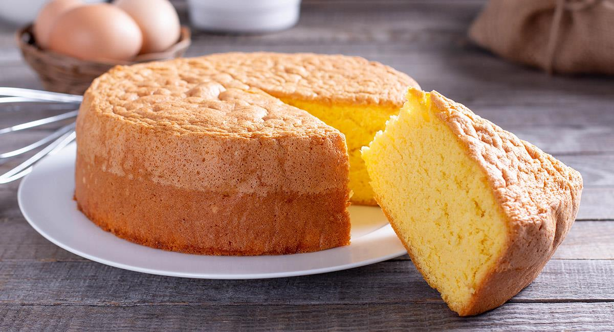

Pastel de vainilla
Este pastel esponjoso y suave es el clásico
que nunca falla. Su sabor a vainilla es sutil pero presente, y su textura ligera lo convierte en una base
perfecta para glaseados, rellenos o decoraciones al gusto. Ideal para celebraciones o simplemente para
disfrutar con una taza de té.

Ingredientes
- 2 tazas de harina de trigo todo uso
- ½ taza de manteca vegetal
- 1½ tazas de azúcar refinada
- 1 taza de leche
- 3½ cucharaditas de polvo para hornear
- 1 cucharadita de sal
- 1 cucharadita de extracto de vainilla
- 3 huevos grandes
Proceso
- Precalentar y preparar el molde:
Precalienta el horno a 180 °C (350 °F). Engrasa y enharina un molde de aproximadamente 23×33 cm.
- Mezclar los ingredientes secos:
En un recipiente aparte, combina la harina, el polvo para hornear y la sal. Reserva mientras preparas la
mezcla húmeda.
- Batir manteca vegetal y azúcar:
En un bol amplio, bate la manteca vegetal con el azúcar hasta que la mezcla esté esponjosa y
blanquecina. Esto incorpora aire y ayuda a la esponjosidad del pastel.
- Incorporar los huevos y la vainilla:
Añade los huevos uno por uno, batiendo bien después de cada adición. Después, incorpora la vainilla
hasta que esté bien integrada.
- Agregar ingredientes secos y leche alternadamente:
Agrega la mitad de la mezcla de harina, bate suavemente, luego añade la leche, y por último la harina
restante. Esto ayuda a mantener una textura uniforme sin sobrebatir.
- Hornear:
Vierte la mezcla en el molde preparado y hornea entre 40 y 45 minutos, o hasta que un palillo insertado
en el centro salga limpio.
Obtendrás un pastel tierno, con una miga fina y esponjosa. Su sabor a vainilla es clásico y versátil, ideal
para acompañar cremas, glaseados, frutas o simplemente saborearlo solo. Gracias a su textura equilibrada y
probado método, es una receta confiable para cualquier ocasión.